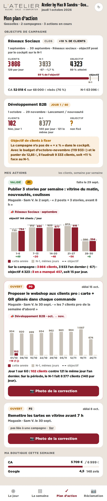
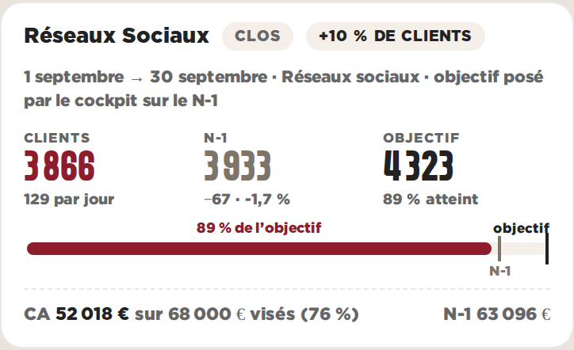
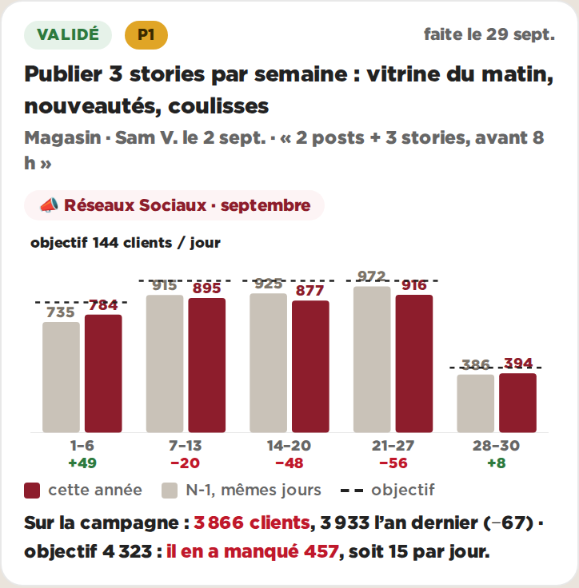

Plan d’action · objectifs de campagne · Gosselies · données réelles du 01/10/2026, actions en illustrationA — La jauge en tête, les semaines côte à côte
En haut du plan d’action, une carte par campagne : clients faits, N-1, objectif, et une jauge qui va de zéro à l’objectif avec le repère N-1. Sur chaque action liée à une campagne, les clients semaine par semaine : cette année en couleur, l’an dernier en gris, l’objectif en trait, l’écart écrit sous chaque semaine.

Le plan d’action au téléphone (390 px)

La campagne de septembre

L’action liée à la campagne
Pour
- Un coup d’œil suffit : trois chiffres et une jauge, la même lecture pour toutes les campagnes
- Les semaines sont le rythme du magasin : on voit laquelle a décroché (14–20 et 21–27 sept.)
- L’écart au N-1 est écrit sous chaque semaine, pas à deviner
- Une campagne sans objectif chiffré le dit, et propose un chiffre à partir du budget
Contre
- Cinq semaines × deux barres : lisible au téléphone, pas plus de six semaines
- Le cumul (« où en est-on sur l’ensemble ») n’est lu que sur la jauge, pas sur le graphique
- Deux cartes de campagne avant les actions : le plan commence plus bas